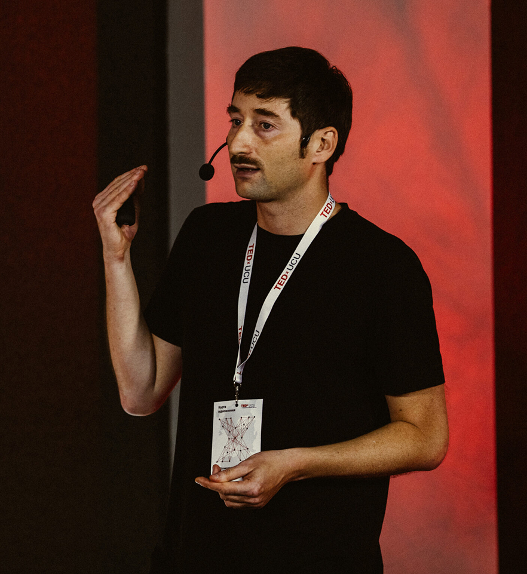
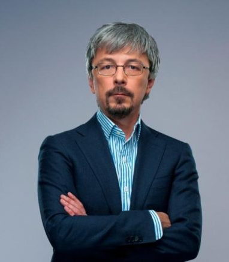

Where Everything Disappears
2025


Documentary production.
Kyiv - Warsaw - Tbilisi


A collection of documentary films that navigate the boundary between memory, history, and human experience. Each project is a journey into the unknown.
The first international feature film by Oleksandr Tkachenko, made with the support of ARTE as part of the Generation Ukraine project. The film's world premiere took place at FIPADOC 2026.
A documentary about the Ukrainian-American artist Yakiv Hnizdovsky, whose journey from DP camps to world recognition mirrors the experience of Ukrainian emigrants. Through the eyes of his cat Zherom, the film tells a story of the search for identity, a connection to nature, and overcoming loneliness in a changing world.
An intimate portrait of a couple whose love unfolds at a distance and under constant public attention.
Co-founder of the "86" festival and Takflix. Her debut film was named best documentary of the year in Ukraine.

Co-owner of the KINO42 cinema and the 86PROKAT distribution company. Produces the studio's documentary films, including "Where Everything Disappears."
Director of "Tell Me a Fairy Tale" - a film about the relationship of a military couple through a year of separation.

Director and anthropologist, author of "Where Everything Disappears," made with the support of ARTE.
Producer with experience in festival distribution. Produces "Birds and Beasts. The Universe of Hnizdovsky."
Phalanstery Films is an independent documentary production studio founded on the belief that truth is the most radical form of storytelling. We work at the intersection of cinema, journalism, and art.
From long-form investigations to intimate short portraits, every project we undertake begins with a single question: what is the world trying not to see?